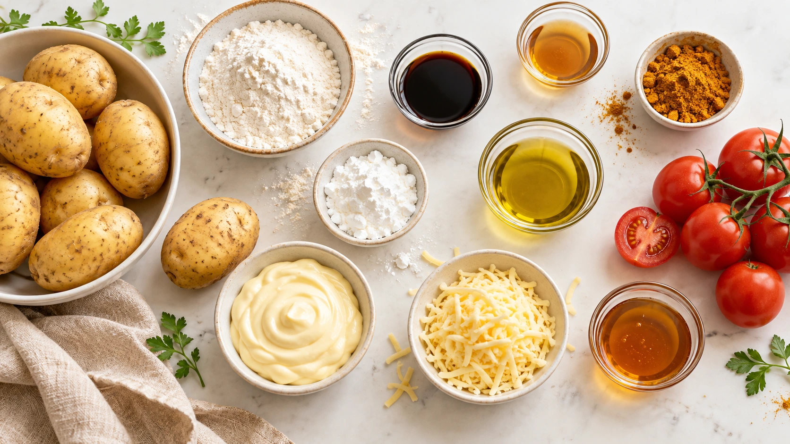
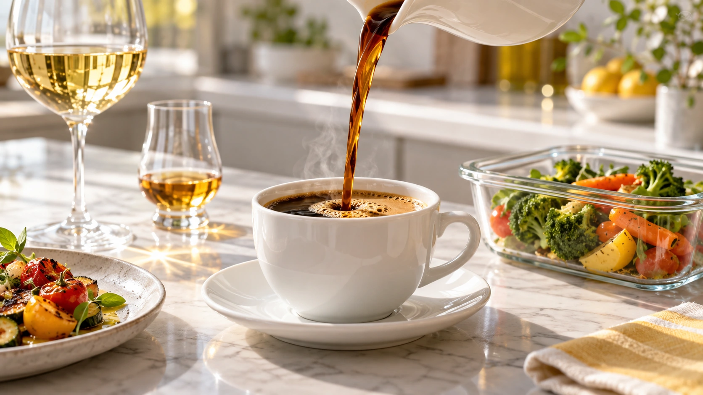

Plants & water
Water, growing conditions and handling practices connect Better Taste to Smart Farm. Proposed Neipclova applications should be compared against a clear baseline.
06 / BETTER TASTE
From the growing environment to the package, quality asks us to care about the whole path.

WHERE FOOD BEGINS
Water, growing conditions and handling practices connect Better Taste to Smart Farm. Proposed Neipclova applications should be compared against a clear baseline.
Cattle, pigs, poultry and egg production each require their own husbandry and food-safety practices. A water or environmental proposal must be evaluated for the specific system.
Discuss the species, water quality, production setting and handling chain. No bacterial-prevention or improved-fish-quality outcome is assumed from treatment alone.

FOOD PACKAGING DEVELOPMENT
Neipclova explores proposed treatment options for food-packaging materials alongside the right material, processing conditions and product requirements.
Flavor, odor, appearance and freshness can be measured in a comparison. Shelf-life, migration, food-contact suitability and microbiological performance require their own evaluation.
We do not assume that a packaging treatment improves taste, prevents bacteria or extends shelf life. The application and supporting evidence come first.
Discuss a packaging projectA PRACTICAL DEVELOPMENT PATH
Food type, package material, contact conditions, intended shelf life and delivery environment.
Control and proposed application, prepared and stored under the same conditions.
Sensory observations alongside the safety and material tests needed for that application.
LET’S EXPLORE IT TOGETHER
Tell us about your ingredient, beverage, production environment or packaging project. We can discuss a comparative trial, the information needed for your application and a quotation.
hyeon@neipclova.com